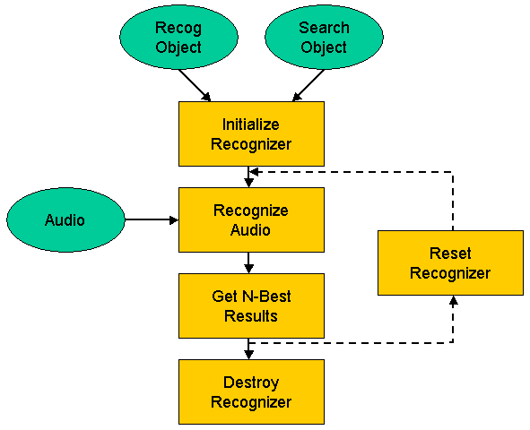

How to Build and Run the Recognizer
A high-level view of the recognition process is illustrated in Figure 2:
|  |
| Figure 2: Recognition Process
|
|---|
This process is organized as six steps, which are described in more detail in the following sections:
- Create a recognizer
- How to detect speech
- Pass audio to the recognizer
- Get the recognition result
- Re-Using the recognizer
- Destroy the recognizer